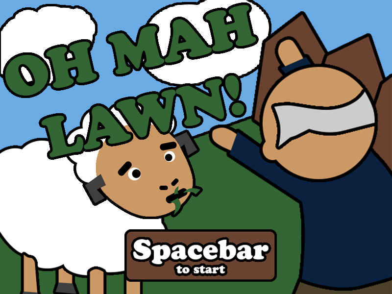

Team
- Andrew Adriance
- Jeffrey Lam

Game Concept
Tl;DR SCARE SHEEP
Technologies
- View Frustum Culling
- Deferred Shading
- Shadow Mapping
- Billboarded Particle System
- 3D Positional Sound
- Non-photorealistic rendering including edge detection
- A* AI system
- Model hierarchy with animations
- JSON resource loader
- Sky Box
Videos
Replace Me